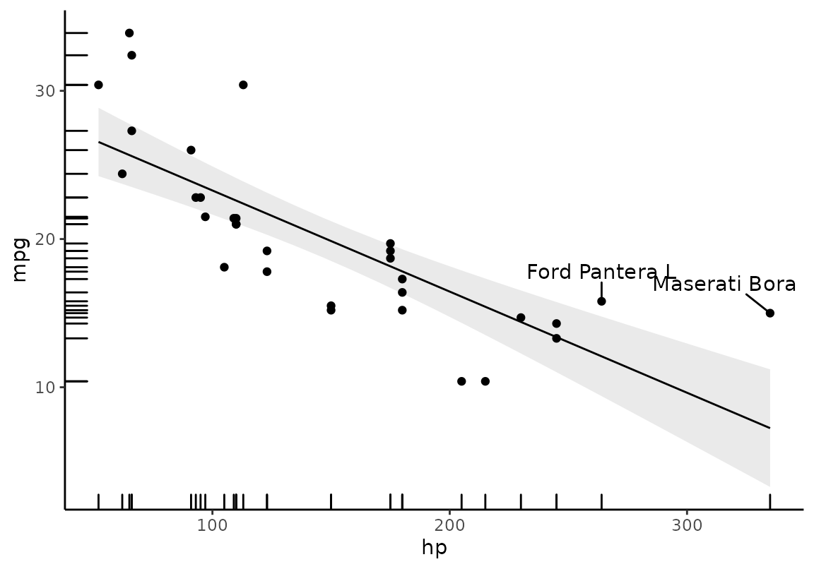

In the context of this package, an “Adjusted Prediction” is defined as:
The outcome predicted by a fitted model on a specified scale for a given combination of values of the predictor variables, such as their observed values, their means, or factor levels (a.k.a. “reference grid”).
Here, the word “Adjusted” simply means “model-derived” or “model-based.”
Prediction type (or scale)
Using the type argument of the predictions() function we can specify the “scale” on which to make predictions. This refers to either the scale used to estimate the model (i.e., link scale) or to a more interpretable scale (e.g., response scale). For example, when fitting a linear regression model using the lm() function, the link scale and the response scale are identical. An “Adjusted Prediction” computed on either scale will be expressed as the mean value of the response variable at the given values of the predictor variables.
On the other hand, when fitting a binary logistic regression model using the glm() function (which uses a binomial family and a logit link ), the link scale and the response scale will be different: an “Adjusted Prediction” computed on the link scale will be expressed as a log odds of a “successful” response at the given values of the predictor variables, whereas an “Adjusted Prediction” computed on the response scale will be expressed as a probability that the response variable equals 1.
The default value of the type argument for most models is “response”, which means that the predictions() function will compute predicted probabilities (binomial family), Poisson means (poisson family), etc.
Prediction grid
To compute adjusted predictions we must first specify the values of the predictors to consider: a “reference grid.” For example, if our model is a linear model fitted with the lm() function which relates the response variable Happiness with the predictor variables Age, Gender and Income, the reference grid could be a data.frame with values for Age, Gender and Income: Age = 40, Gender = Male, Income = 60000.
The “reference grid” may or may not correspond to actual observations in the dataset used to fit the model; the example values given above could match the mean values of each variable, or they could represent a specific observed (or hypothetical) individual. The reference grid can include many different rows if we want to make predictions for different combinations of predictors. By default, the predictions() function uses the full original dataset as a reference grid, which means it will compute adjusted predictions for each of the individuals observed in the dataset that was used to fit the model.
The predictions() function
By default, predictions calculates the regression-adjusted predicted values for every observation in the original dataset:
library(marginaleffects)
mod <- lm(mpg ~ hp + factor(cyl), data = mtcars)
pred <- predictions(mod)
head(pred)
#> rowid type predicted std.error statistic p.value conf.low conf.high
#> 1 1 response 20.03819 1.2041405 16.64107 3.512623e-62 17.67812 22.39826
#> 2 2 response 20.03819 1.2041405 16.64107 3.512623e-62 17.67812 22.39826
#> 3 3 response 26.41451 0.9619738 27.45866 5.476301e-166 24.52907 28.29994
#> 4 4 response 20.03819 1.2041405 16.64107 3.512623e-62 17.67812 22.39826
#> 5 5 response 15.92247 0.9924560 16.04350 6.347069e-58 13.97729 17.86765
#> 6 6 response 20.15839 1.2186288 16.54186 1.832792e-61 17.76992 22.54685
#> mpg hp cyl
#> 1 21.0 110 6
#> 2 21.0 110 6
#> 3 22.8 93 4
#> 4 21.4 110 6
#> 5 18.7 175 8
#> 6 18.1 105 6In many cases, this is too limiting, and researchers will want to specify a grid of “typical” values over which to compute adjusted predictions.
Adjusted Predictions at User-Specified values (aka Adjusted Predictions at Representative values, APR)
There are two main ways to select the reference grid over which we want to compute adjusted predictions. The first is using the variables argument. The second is with the newdata argument and the datagrid() function that we already introduced in the marginal effects vignette.
variables: Levels and Tukey’s 5 numbers
The variables argument is a handy shortcut to create grids of predictors. Each of the levels of factor/logical/character variables listed in the variables argument will be displayed. For numeric variables, predictions will compute adjusted predictions at Tukey’s 5 summary numbers. All other variables will be set at their means or modes.
predictions(mod, variables = c("cyl", "hp"))
#> rowid type predicted std.error statistic p.value conf.low
#> 1 1 response 21.43244 1.6083883 13.325417 1.647107e-40 18.280061
#> 2 2 response 20.37474 1.2562453 16.218756 3.716490e-59 17.912540
#> 3 3 response 19.72569 1.1892191 16.587091 8.640479e-62 17.394860
#> 4 4 response 18.35547 1.4848895 12.361507 4.221654e-35 15.445143
#> 5 5 response 14.62945 3.4865450 4.195974 2.717009e-05 7.795951
#> 6 6 response 27.40010 1.0595843 25.859292 1.912807e-147 25.323352
#> 7 7 response 26.34239 0.9707174 27.137033 3.601945e-162 24.439819
#> 8 8 response 25.69334 1.1343184 22.650908 1.366648e-113 23.470118
#> 9 9 response 24.32313 1.7749372 13.703655 9.653908e-43 20.844315
#> 10 10 response 20.59711 4.0024363 5.146143 2.658970e-07 12.752478
#> 11 11 response 18.87925 2.5641372 7.362807 1.800823e-13 13.853631
#> 12 12 response 17.82154 1.9364843 9.203038 3.479686e-20 14.026100
#> 13 13 response 17.17249 1.5721502 10.922932 8.955672e-28 14.091133
#> 14 14 response 15.80228 0.9537705 16.568217 1.182803e-61 13.932921
#> 15 15 response 12.07626 2.1126445 5.716181 1.089447e-08 7.935551
#> conf.high mpg cyl hp
#> 1 24.58483 20.09062 6 52
#> 2 22.83693 20.09062 6 96
#> 3 22.05651 20.09062 6 123
#> 4 21.26580 20.09062 6 180
#> 5 21.46296 20.09062 6 335
#> 6 29.47685 20.09062 4 52
#> 7 28.24496 20.09062 4 96
#> 8 27.91656 20.09062 4 123
#> 9 27.80194 20.09062 4 180
#> 10 28.44174 20.09062 4 335
#> 11 23.90486 20.09062 8 52
#> 12 21.61698 20.09062 8 96
#> 13 20.25385 20.09062 8 123
#> 14 17.67163 20.09062 8 180
#> 15 16.21697 20.09062 8 335The data.frame produced by predictions is “tidy”, which makes it easy to manipulate with other R packages and functions:
library(kableExtra)
library(tidyverse)
predictions(mod, variables = c("cyl", "hp")) %>%
select(hp, cyl, predicted) %>%
pivot_wider(values_from = predicted, names_from = cyl) %>%
kbl(caption = "A table of Adjusted Predictions") %>%
kable_styling() %>%
add_header_above(header = c(" " = 1, "cyl" = 3))| hp | 6 | 4 | 8 |
|---|---|---|---|
| 52 | 21.43244 | 27.40010 | 18.87925 |
| 96 | 20.37474 | 26.34239 | 17.82154 |
| 123 | 19.72569 | 25.69334 | 17.17249 |
| 180 | 18.35547 | 24.32313 | 15.80228 |
| 335 | 14.62945 | 20.59711 | 12.07626 |
newdata and datagrid
A second strategy to construct grids of predictors for adjusted predictions is to combine the newdata argument and the datagrid function. Recall that this function creates a “typical” dataset with all variables at their means or modes, except those we explicitly define:
datagrid(cyl = c(4, 6, 8), model = mod)
#> hp cyl
#> 1: 146.6875 4
#> 2: 146.6875 6
#> 3: 146.6875 8We can also use this datagrid function in a predictions call (omitting the model argument):
predictions(mod, newdata = datagrid())
#> rowid type predicted std.error statistic p.value conf.low conf.high
#> 1 1 response 16.60307 1.278754 12.98379 1.512165e-38 14.09676 19.10938
#> hp cyl mpg
#> 1 146.6875 8 0
predictions(mod, newdata = datagrid(cyl = c(4, 6, 8)))
#> rowid type predicted std.error statistic p.value conf.low conf.high
#> 1 1 response 25.12392 1.368888 18.35353 3.093502e-75 22.44095 27.80689
#> 2 2 response 19.15627 1.247190 15.35955 3.057119e-53 16.71182 21.60071
#> 3 3 response 16.60307 1.278754 12.98379 1.512165e-38 14.09676 19.10938
#> hp cyl mpg
#> 1 146.6875 4 0
#> 2 146.6875 6 0
#> 3 146.6875 8 0Users can change the summary function used to summarize each type of variables using the FUN.numeric, FUN.factor, and related arguments, for example substituting the mean for the median.
counterfactual data grid
An alternative approach to construct grids of predictors is to use grid_type = "counterfactual" argument value. This will duplicate the whole dataset, with the different values specified by the user.
For example, the mtcars dataset has 32 rows. This command produces a new dataset with 64 rows, with each row of the original dataset duplicated with the two values of the am variable supplied (0 and 1):
mod <- glm(vs ~ hp + am, data = mtcars, family = binomial)
nd <- datagrid(model = mod, am = 0:1, grid_type = "counterfactual")
dim(nd)
#> [1] 64 3Then, we can use this dataset and the predictions function to create interesting visualizations:
pred <- predictions(mod, newdata = datagrid(am = 0:1, grid_type = "counterfactual")) %>%
select(am, predicted, rowid_counterfactual) %>%
pivot_wider(id_cols = rowid_counterfactual,
names_from = am,
values_from = predicted)
ggplot(pred, aes(x = `0`, y = `1`)) +
geom_point() +
geom_abline(intercept = 0, slope = 1) +
labs(x = "Predicted Pr(vs=1), when am = 0",
y = "Predicted Pr(vs=1), when am = 1")
In this graph, each dot represents the predicted probability that vs=1 for one observation of the dataset, in the counterfactual worlds where am is either 0 or 1.
Adjusted Prediction at the Mean (APM)
Some analysts may want to calculate an “Adjusted Prediction at the Mean,” that is, the predicted outcome when all the regressors are held at their mean (or mode). To achieve this, we use the datagrid function. By default, this function produces a grid of data with regressors at their means or modes, so all we need to do to get the APM is:
predictions(mod, newdata = "mean")
#> rowid type predicted std.error conf.low conf.high hp am
#> 1 1 response 0.06308965 0.08662801 0.003794253 0.543491 146.6875 0.40625This is equivalent to calling:
predictions(mod, newdata = datagrid())
#> rowid type predicted std.error conf.low conf.high hp am
#> 1 1 response 0.06308965 0.08662801 0.003794253 0.543491 146.6875 0.40625Average Adjusted Predictions (AAP)
An “Average Adjusted Prediction” is the outcome of a two step process:
- Create a new dataset with each of the original regressor values, but fixing some regressors to values of interest.
- Take the average of the predicted values in this new dataset.
We can obtain AAPs by applying the tidy() or summary() functions to an object produced by the predictions() function:
pred <- predictions(mod)
summary(pred)
#> Average Adjusted Predictions
#> Predicted Std. Error z value Pr(>|z|) CI low CI high
#> 1 0.4375 0.04288 10.2 < 2.22e-16 0.3535 0.5215
#>
#> Model type: glm
#> Prediction type: responseThis is equivalent to:
pred %>% summarize(AAP = mean(predicted))
#> AAP
#> 1 0.4375
summary(pred)
#> Average Adjusted Predictions
#> Predicted Std. Error z value Pr(>|z|) CI low CI high
#> 1 0.4375 0.04288 10.2 < 2.22e-16 0.3535 0.5215
#>
#> Model type: glm
#> Prediction type: responseWe can also compute the AAP for multiple values of the regressors. For example, here use create a “counterfactual” data grid where each observation of the dataset are repeated twice, with different values of the am variable, and all other variables held at the observed values. Then, we use the summary() function’s by argument or some dplyr magic:
p <- predictions(
mod,
newdata = datagrid(am = 0:1, grid_type = "counterfactual"))
summary(p, by = "am")
#> Average Adjusted Predictions
#> am Predicted Std. Error z value Pr(>|z|) CI low CI high
#> 1 0 0.5261 0.03303 15.93 < 2.22e-16 0.4614 0.5909
#> 2 1 0.3302 0.06462 5.11 3.2272e-07 0.2035 0.4568
#>
#> Model type: glm
#> Prediction type: response
p %>% group_by(am) %>%
summarize(AAP = mean(predicted))
#> # A tibble: 2 × 2
#> am AAP
#> <int> <dbl>
#> 1 0 0.526
#> 2 1 0.330Conditional Adjusted Predictions (Plot)
First, we download the ggplot2movies dataset from the RDatasets archive. Then, we create a variable called certified_fresh for movies with a rating of at least 8. Finally, we discard some outliers and fit a logistic regression model:
library(tidyverse)
dat <- read.csv("https://vincentarelbundock.github.io/Rdatasets/csv/ggplot2movies/movies.csv") %>%
mutate(style = case_when(Action == 1 ~ "Action",
Comedy == 1 ~ "Comedy",
Drama == 1 ~ "Drama",
TRUE ~ "Other"),
style = factor(style),
certified_fresh = rating >= 8) %>%
filter(length < 240)
mod <- glm(certified_fresh ~ length * style, data = dat, family = binomial)We can plot adjusted predictions, conditional on the length variable using the plot_cap function:
mod <- glm(certified_fresh ~ length, data = dat, family = binomial)
plot_cap(mod, condition = "length")
We can also introduce another condition which will display a categorical variable like style in different colors. This can be useful in models with interactions:
mod <- glm(certified_fresh ~ length * style, data = dat, family = binomial)
plot_cap(mod, condition = c("length", "style"))
Since the output of plot_cap() is a ggplot2 object, it is very easy to customize. For example, we can add points for the actual observations of our dataset like so:
library(ggplot2)
library(ggrepel)
mt <- mtcars
mt$label <- row.names(mt)
mod <- lm(mpg ~ hp, data = mt)
plot_cap(mod, condition = "hp") +
geom_point(aes(x = hp, y = mpg), data = mt) +
geom_rug(aes(x = hp, y = mpg), data = mt) +
geom_text_repel(aes(x = hp, y = mpg, label = label),
data = subset(mt, hp > 250),
nudge_y = 2) +
theme_classic()
Prediction types
The predictions function computes model-adjusted means on the scale of the output of the predict(model) function. By default, predict produces predictions on the "response" scale, so the adjusted predictions should be interpreted on that scale. However, users can pass a string to the type argument, and predictions will consider different outcomes.
Typical values include "response" and "link", but users should refer to the documentation of the predict of the package they used to fit the model to know what values are allowable. documentation.
mod <- glm(am ~ mpg, family = binomial, data = mtcars)
pred <- predictions(mod, type = "response")
head(pred)
#> rowid type predicted std.error conf.low conf.high am mpg
#> 1 1 response 0.4610951 0.11584004 0.2554723 0.6808686 1 21.0
#> 2 2 response 0.4610951 0.11584004 0.2554723 0.6808686 1 21.0
#> 3 3 response 0.5978984 0.13239819 0.3356711 0.8139794 1 22.8
#> 4 4 response 0.4917199 0.11961263 0.2746560 0.7119512 0 21.4
#> 5 5 response 0.2969009 0.10051954 0.1411369 0.5204086 0 18.7
#> 6 6 response 0.2599331 0.09782666 0.1147580 0.4876032 0 18.1
pred <- predictions(mod, type = "link")
head(pred)
#> rowid type predicted std.error statistic p.value conf.low
#> 1 1 link -0.15593472 0.4661826 -0.33449281 0.73800772 -1.0696358
#> 2 2 link -0.15593472 0.4661826 -0.33449281 0.73800772 -1.0696358
#> 3 3 link 0.39671602 0.5507048 0.72037875 0.47129183 -0.6826455
#> 4 4 link -0.03312345 0.4785818 -0.06921168 0.94482113 -0.9711265
#> 5 5 link -0.86209956 0.4815290 -1.79033775 0.07339963 -1.8058791
#> 6 6 link -1.04631647 0.5085395 -2.05749308 0.03963882 -2.0430356
#> conf.high am mpg
#> 1 0.75776637 1 21.0
#> 2 0.75776637 1 21.0
#> 3 1.47607755 1 22.8
#> 4 0.90487956 0 21.4
#> 5 0.08167995 0 18.7
#> 6 -0.04959739 0 18.1We can also plot predictions on different outcome scales:
plot_cap(mod, condition = "mpg", type = "response")
plot_cap(mod, condition = "mpg", type = "link")